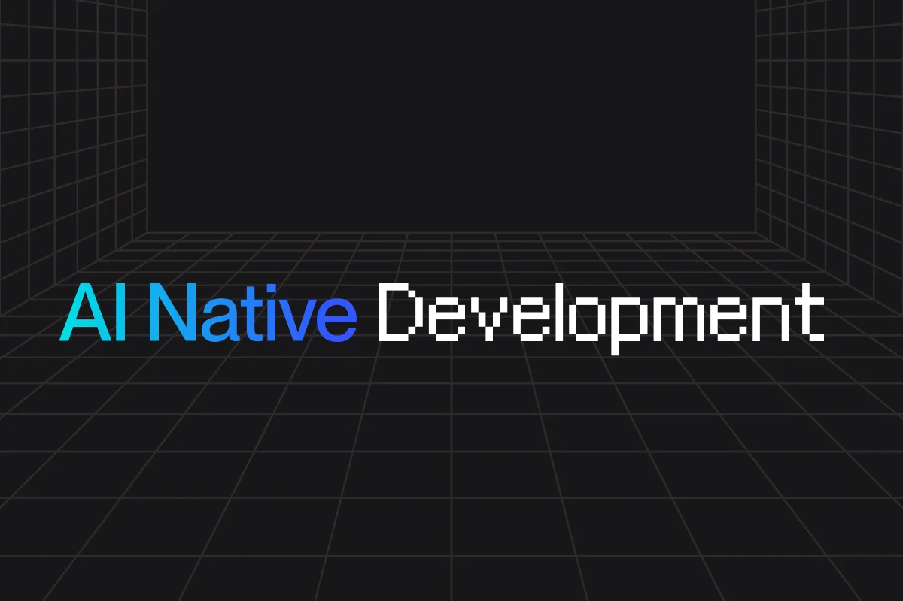

KI, Programmierung und die Zukunft

Dieser Report skizziert den Stand der KI-gestützten Programmierung, wie große Tech-Firmen (mit Fokus auf Spotify) aktuelle Modelle einsetzen und wie sich die Rolle von Entwicklerinnen und Entwicklern in den nächsten Jahren verändern dürfte. Ergänzend beschreibt er praktische Einstiegspfade für Solo-Entwickler, um heute mit Tools wie Claude, Cursor, Devin-artigen Systemen und modernen KI-IDEs komplette Websites fast nur mit Sprache und einfachen Prompts zu bauen.
Aktueller Stand der Modelle
Große Coding- und General-Purpose-Modelle (OpenAI, Anthropic, Google, xAI usw.) haben sich seit 2024 stark in Richtung "autonome Coder" entwickelt und lösen End-to-End-Coding-Aufgaben über mehrere Dateien hinweg. Neuere Generationen wie Claude 3.5/3.7 Sonnet oder vergleichbare GPT- und Gemini-Modelle kombinieren hohe Kontextfenster (200K+ Tokens) mit verbesserter Fehlersuche und anhaltendem Debugging, was sie für komplexe Codebasen einsetzbar macht.
Spezialisierte Coding-Plattformen
Plattformen wie Claude Code 2025 integrieren solche Modelle tief in IDEs (VS Code, JetBrains) und CI/CD (z.B. via GitHub Actions), inklusive Extended-Thinking-Modi, Files-API, Code-Execution-Tools und Prompt-Caching. Damit werden nicht nur Codegenerierung und Autocomplete unterstützt, sondern auch automatisierte Reviews, Bug-Fixes und Hintergrundtasks, die im Pipeline-Kontext laufen.
Cursor bietet ein AI-native IDE-Erlebnis: Multi-File-Editing, RAG über den gesamten Code, spezialisierte Tab-Completion-Modelle und die Möglichkeit, zwischen mehreren Frontier-Modellen (Claude, GPT, Gemini, eigene Modelle) dynamisch zu wechseln. Autonome Engineer-Systeme wie Devin-artige Tools fokussieren sich stärker auf vollständige Aufgabenabwicklung (Issue/Spec → Repo-Änderung → Tests → Deployment) statt auf reine Editor-Assistenz.
Wie Spotify KI heute einsetzt
Autonome Programmierung und das "Honk"-System
Ein bemerkenswerter Meilenstein in der Softwareentwicklung wurde bei Spotify erreicht: Laut Co-CEO Gustav Söderström haben die besten Entwickler des Unternehmens "seit Dezember keine einzige Zeile Code mehr geschrieben". Möglich macht dies ein internes System namens "Honk", das generative KI – insbesondere Claude Code – nutzt, um Remote- und Echtzeit-Code-Deployments radikal zu beschleunigen.
Ein konkretes Use-Case-Szenario zeigt das Potenzial: Ein Entwickler kann auf dem morgendlichen Arbeitsweg über Slack auf dem Smartphone anordnen, einen Bug zu beheben oder ein neues Feature zur iOS-App hinzuzufügen. Sobald die KI die Arbeit abgeschlossen hat, erhält der Entwickler die neue Version direkt auf sein Gerät gepusht und kann sie noch vor Ankunft im Büro in die Produktion übernehmen. Dieses System hat Spotify dabei geholfen, 2025 über 50 neue Features und Updates – wie KI-gestützte Prompted Playlists, Page Match für Hörbücher oder About This Song – auszuliefern.
Einzigartige Datensätze statt bloßer Fakten
Neben der autonomen KI-Programmierung sieht Spotify seinen größten Wettbewerbsvorteil im Aufbau von Datensätzen, die andere große Sprachmodelle (LLMs) nicht einfach reproduzieren können (im Gegensatz zu z.B. Wikipedia). Da es auf musikbezogene Fragen (wie "Was ist gute Workout-Musik?") keine universelle faktische Antwort gibt, sondern die Vorlieben stark nach Kultur und Geografie variieren (z.B. Hip-Hop vs. Heavy Metal), baut Spotify auf massenhaft kontextbezogene Hörerdaten. Dieser stetig wachsende, einzigartige Datenschatz verbessert die internen ML-Modelle kontinuierlich. Auch beim Thema KI-generierter Musik bleibt Spotify innovativ: Künstler und Labels können in den Metadaten angeben, wie ein Song erstellt wurde, während Spam strikt durch die Plattform reguliert wird.
Personalisierung als Kern-Use-Case
Spotify beschreibt weiterhin, dass praktisch die gesamte Personalisierung (Home-Feed, Discover Weekly, Release Radar usw.) durch Machine-Learning-Modelle getrieben ist, die gewaltige Mengen an Nutzungsdaten verarbeiten. Der AI DJ von Spotify kombiniert diese Personalisierungsmodelle zusätzlich mit generativer KI und einer synthetischen Stimme.
Strategische Implikation
Spotify zeigt, wie stark sich aktuelle Technologie weiterentwickelt: KI wird nicht nur für das Endprodukt, sondern extrem effektiv für die eigene Softwareentwicklung eingesetzt. "Wir sehen dies nicht als das Ende der Entwicklung im Bereich KI, sondern erst als den Anfang", betonte Söderström. Durch Tools wie "Honk" wandelt sich die Rolle der Entwickler zunehmend vom reinen Coder zum Orchestrator, der hochspezialisierte KI-Prozesse per Prompt und Review steuert.
Zukunft der KI-Programmierung
Von Assistenz zu autonomen Agenten
Analysen aus 2025 prognostizieren, dass in naher Zukunft ein Großteil des Codes von KI generiert werden könnte; Führungskräfte bei OpenAI und Anthropic sprechen von 90%+ Code-Anteil durch KI in den kommenden Jahren. Berichte von Beratungen wie Bain sehen einen Übergang von Assistenztools zu autonomen Agenten, die eigenständig Tickets umsetzen, Tests schreiben und Deployments ausführen.
Frühe Agenten wie Devin oder ähnliche Systeme zeigen bereits, dass komplexe Arbeitspakete (Issue lesen, Repo clonen, implementieren, testen, PR erstellen) möglich sind. Die Produktivitätssprünge sind deutlich: Fallstudien zu Claude Code berichten von drastischen Reduktionen in Routinearbeit (teilweise über 80% weniger manuelle Code-Reviews und Bugfix-Zeit).
Rolle von Entwicklern: Orchestratoren und Reviewer
Die Rolle der Developer verschiebt sich in Richtung Spezifikation, Architektur, Qualitätskontrolle und Produktdenken, während KI Roh-Code und viele Routineaufgaben übernimmt. Zukünftige Skills sind daher: präzise Problemformulierung, Systemdesign, KI-Orchestrierung (welche Tools/Modelle für welchen Job), Daten- und Sicherheitsverständnis, plus die Fähigkeit, KI-Ausgaben kritisch zu bewerten.
Konzepte wie "Vibe Coding" beschreiben, dass Devs eher per natürlicher Sprache beschreiben, wie sich ein System anfühlen oder verhalten soll, während die KI den konkreten Code in der gewählten Tech-Stack-Realität konstruiert. Damit sinkt die Einstiegshürde für Nicht-Programmierer, gleichzeitig steigt die Bedeutung von Produkt-Intuition und langfristiger Architektur.
Hier ein Spiel testen, das „gevibe codet“ ist: Space Game starten
Tools: Claude, Cursor, Devin & Co.
Claude Code / Claude-Modelle
Claude Code (Anthropic) ist 2025/26 ein vollständiger Dev-Stack mit:
- Plugins: Tief integrierte Plugins/Tools für VS Code und JetBrains
- Extended Thinking: Modi, die komplexe Probleme über längere Zeiträume durchdenken
- Files-API: Für große Codebasen und Diffs
- GitHub-Actions: Integration für automatisierte Hintergrundtasks
Diese Plattform wird von Unternehmen wie GitHub (neue Copilot-Agenten), Cursor und Replit als Motor für fortgeschrittenes Coding eingesetzt. Die Stärken liegen in langer, konsistenter Reasoning-Kette, Multi-File-Refaktorierungen und robustem Debugging.
Cursor (AI-native IDE)
Cursor ist eine eigenständige IDE, die KI zentral in den Editor baut, statt als Plugin zu denken.
Schlüsselmerkmale:
- AI-Chat: Kennt den gesamten Workspace, Git-Historie und Diffs
- Multi-File-Edits: Per natürlicher Sprache ("refaktoriere dieses Modul in drei Services")
- Modell-Wechsel: Zwischen verschiedenen Frontier-Modellen (Claude, GPT, Gemini)
- UI-Building: "Composer" und Visual Editor über Drag-and-Drop plus Prompts
- Predictive Code: Tab-Completion mit spezialisierten Modellen (quasi Copilot++)
Aktuelle Vergleiche bewerten Cursor als einen der polishedsten AI-Dev-Workflows, besonders für Teams, die frontier-Modelle flexibel kombinieren wollen.
Devin-artige Agenten
Tools wie Devin (Cognition) stehen exemplarisch für eine neue Kategorie: "autonome Software Engineers", die eigenständig komplette Tasks übernehmen. Sie lesen Spezifikationen, planen Arbeitsschritte, bedienen IDEs oder Browser, passen Code an, führen Tests aus und berichten Fortschritt, ähnlich wie ein Junior-Entwickler.
Diese Systeme sind aktuell eher teuer und teils noch unzuverlässig, aber sie zeigen die Richtung: in Zukunft werden Devs eher Aufgabenpakete definieren und Quality-Gates setzen, statt jede Zeile Code zu schreiben.
Nutzung von KI in großen Firmen
Große Tech-Firmen wie Google, Microsoft, Amazon, Spotify oder Cloudflare integrieren KI nicht nur im Produkt,
sondern auch intern im Engineering-Prozess.
Muster:
- Coding-Assistenz: (Copilot, Claude Code, Cursor-ähnliche Systeme) als Standard in IDEs
- Automatisierung: Code-Reviews, Security-Scanning, Test-Generierung
- Interne Plattformen: "AI Developer Platforms" mit Self-Service-Agents, die Tickets abarbeiten
- Daten-Kopplung: Data- und ML-Plattformen, die LLMs mit domänenspezifischen Daten koppeln
Berichte zeigen, dass Firmen, die Prozesse und Organisation rund um KI-Dev-Tools anpassen (Pairing-Patterns, Guidelines, Safety-Gates), deutlich größere Produktivitätsgewinne realisieren als solche, die KI nur als optionales Gadget anbieten.
Praktische Einstiegspfade
1. Sofortiger Einstieg: Simple Website
Für eine erste HTML/CSS/JS-Webseite reichen heute im Prinzip ein Browser, ein KI-Chat (Claude, ChatGPT, etc.)
und ein einfacher Code-Editor (oder direkt Cursor/Replit).
Typischer Workflow:
- Prompt-Design: Beschreibe die Website präzise (Zielgruppe, Inhalt, Layout, Farben, Komponenten).
- Iteratives Verbessern: Lass dir ein Layout generieren, dann iteriere: "mach es responsiv".
- Hosting: Nutze kostenlose Static-Hosting-Optionen (z.B. GitHub Pages, Netlify).
- Assets: Lasse die KI Platzhalter-Bilder, Farbschemata und Texte erstellen.
Cursor oder Claude Code können diesen Prozess noch weiter vereinfachen, weil sie die Projektstruktur verstehen und in mehreren Dateien gleichzeitig Änderungen vornehmen.
2. Vom "Prompten" zur Architektur
Um von "ich baue eine einfache Website mit KI" zu "ich baue skalierbare Systeme" zu kommen, bietet sich ein zweistufiger Denkrahmen an:
- Stufe 1 (Jetzt): Nutze KI als Co-Pilot, um kleine Projekte schnell umzusetzen: Landing Pages, kleine Tools. Fokus: Feedbackzyklen, Verstehen wie Modelle denken.
- Stufe 2 (Strukturell): Entwirf Workflows, in denen KI wiederkehrende Aufgaben übernimmt (Code-Gen, Tests, DB-Migrationen). Baue kleine interne "AI Pipelines".
3. Skill-Fokus für die nächsten Jahre
Für jemanden in deinem Alter, der jetzt einsteigt, sind folgende Skills besonders leverage-stark:
- System- und Produktdenken: Was ist der Prozess hinter einem Problem? Wie kann KI ihn automatisieren?
- Daten & Schnittstellen: APIs, Webhooks, um KI-Modelle an reale Datenquellen zu hängen.
- KI-Orchestrierung: Verstehen, wann man welches Tool nutzt (Agent vs Chat vs lokale Modelle).
- Sicherheit: Umgang mit Halluzinationen, Test-Abdeckung, Monitoring von KI-Aktionen.
Diese Meta-Skills sind relativ stabil, auch wenn sich Modellnamen und Frameworks alle paar Jahre ändern.
Fazit
Die KI-Programmierung bewegt sich schnell von punktuellen Autocomplete-Features hin zu integrierten Agenten, die ganze Entwicklungszyklen abdecken. Unternehmen wie Spotify illustrieren, wie klassische ML-Systeme mit neuen LLMs verschmelzen, um sowohl Produktfunktionen als auch interne Engineering-Prozesse zu transformieren.
Für dich als Solo-Gründer ist jetzt der richtige Zeitpunkt, KI sowohl als "Coding-Turbo" für kleine Web-Projekte als auch als Keim für spätere, strukturelle Systeme zu nutzen.